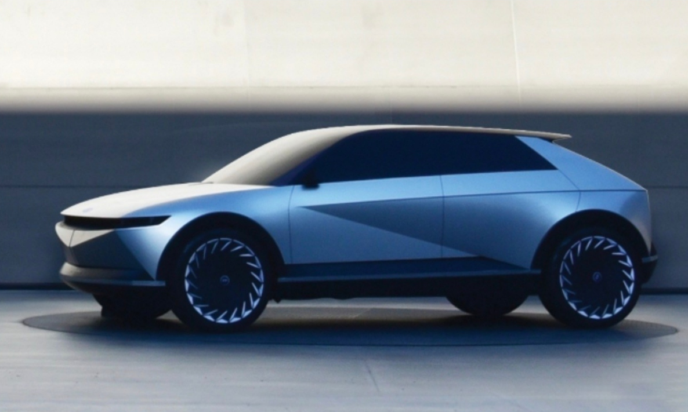
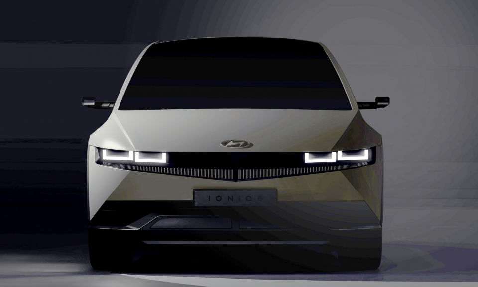
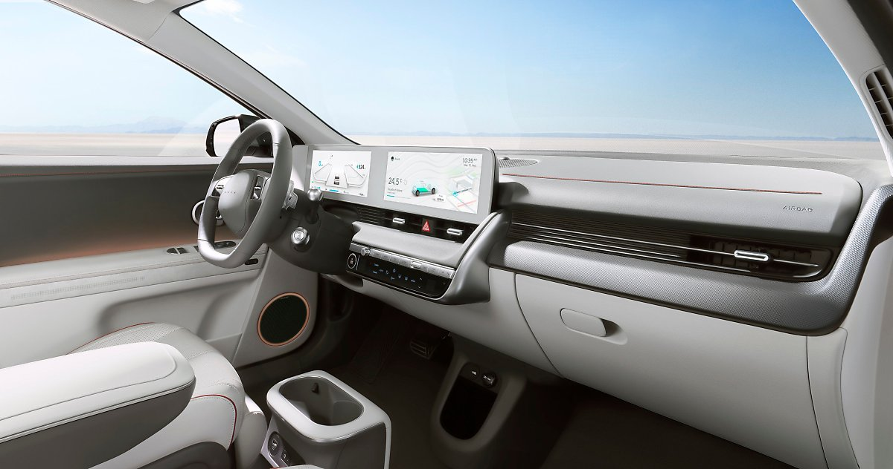
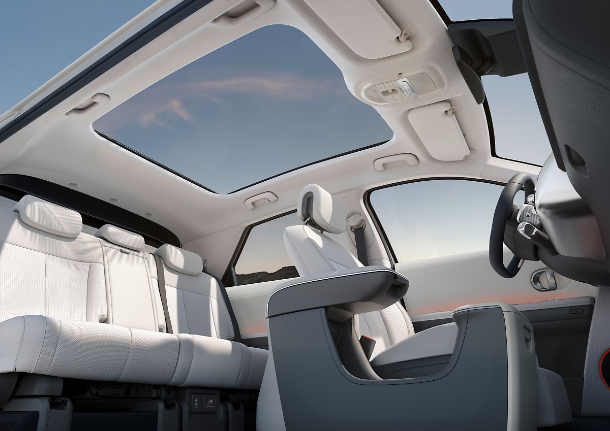

IONIQ 5
무엇이든 가능한 세상
2/25 IONIQ 5 사전예약 개시
INTRODUCING THE NEW IONIQ 5 DESIGN
DESIGN
IONIQ 5는 E-GMP가 최초로 적용된 순수차로 편안한 거주공간이라는 테마를 반영해
생활과 이동의 경계를 허무는 혁신적인 공간을 보여줍니다.


외장 디자인
전면디자인
국산 쿠페 1호이자 국산 콘셉트카 1호인 현대자동차 `포니 쿠페`가 45년만에 전기차, IONIQ 5로 부활합니다.
거기에 핵심적인 디자인 요소인 파라메트릭 픽셀로, 이미지를 구성하는 최소 단위인 픽셀을 형상화했습니다.
외장 디자인
후면디자인
포니를 현대적으로 재해석한 레트로한 느낌과 테일램프의 도트 형태 LED가 어우러져 테크니컬한 후면 디자인을 구성하였습니다.
키네틱 큐브 램프와 매우 흡사한 디자인으로 마치 움직이는 듯한 역동적인 모습을 볼 수 있습니다.

내장 디자인
INTERIOR
하이테크한 느낌과 사이즈가 한층 커진 클러스터 및 AVN 디스플레이,
고급스러운 퀼팅이 적용된 시트,알루미늄 패널 등은 매력적인 경험의 시작입니다.

내장 디자인
전면디자인
아이오닉 5의 모듈형 대쉬보드에는 풀터치 방식의 12인치 인포테인먼트 스크린과 전기차 관련 정보를 제공하는 후드가 없는 12인치 디지털 계기판이 포함됩니다.
디지털 계기판 옆에는 받침대로 다양하게 활용할 수 있는 금속 트레이 홀더가 자리하고 있습니다.
내장 디자인
비전루프
아이오닉 5의 루프는 프레임 없이 하나의 큰 유리 패널로 천장을 장식하고 있어 탁월한 개방감을 선사합니다.
